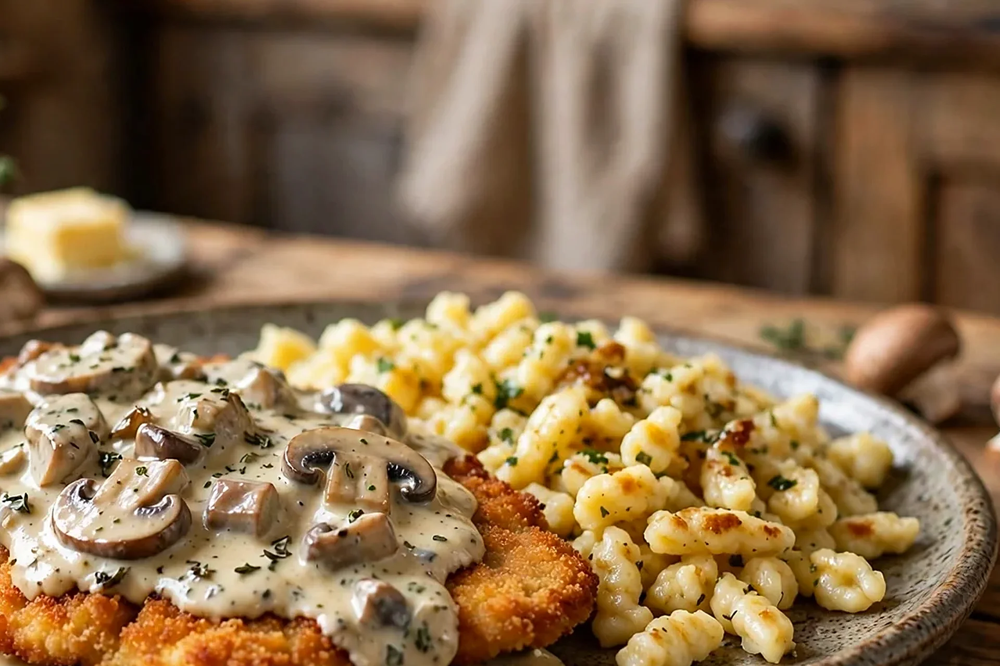

Jägerschnitzel (Hunter's Schnitzel with Mushroom Sauce)
A crisp crumb coating, juicy meat and a creamy mushroom sauce on top – Jägerschnitzel is real tavern comfort food at home. We love it best with French fries or spätzle, so every last bit of sauce finds its way off the plate.

Contents
Ingredients
Instructions
- Pound the cutlets flat between sheets of plastic wrap and season with salt and pepper. Put the flour, eggs and breadcrumbs into three shallow dishes.
- Dredge the cutlets first in flour, then dip them in the egg and coat them in breadcrumbs, pressing the coating on lightly.
- Heat the oil and butter in a large skillet and fry the schnitzels over medium-high heat for 3–4 minutes per side until golden brown. Keep warm.
- For the sauce, melt the butter in the skillet and soften the onion until translucent. Add the mushrooms and fry over high heat for 5–6 minutes, until they take on color.
- Dust the flour over the mushrooms and cook briefly. Pour in the broth and cream and bring to a boil, stirring.
- Simmer the sauce gently for 3–4 minutes, until creamy. Season with salt, pepper and lemon juice and stir in the parsley.
- Place the schnitzels on plates, spoon over plenty of mushroom sauce and serve with French fries, spätzle or parsley potatoes.

Tip
Salt the mushrooms only once they are browned – otherwise they release water and stew instead of frying. Do not press the crumb coating down after breading, so it stays wavy and crisp.
📌 Find more recipe ideas on our Pinterest profile:
Lecker Rezepte on Pinterest
Lecker Rezepte on Pinterest